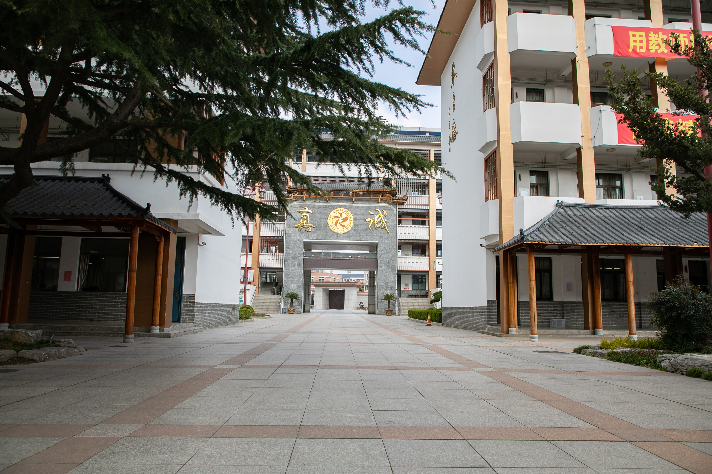

中国人民站起来了
毛泽东 · 开幕词 —— 10 分钟微课演示课件
1课题导入（约 1 分钟）
1949 年 10 月 1 日，毛泽东主席在天安门城楼上庄严宣告“中华人民共和国中央人民政府今天成立了”，30 万军民热血沸腾，全中国为之欢腾。而在开国大典前 10 天——1949 年 9 月 21 日，毛泽东在全国政协第一届全体会议上发表了这篇著名的开幕词，题目就是《中国人民站起来了》。

请大家齐读课题，读出宣告的气势：“中国人民站起来了！”
2背景速览（约 1 分钟）
本文写于 1949 年 9 月 21 日，当时解放战争已取得基本胜利，新中国成立在即。这次会议的目的，就是筹备建立新中国、制定大政方针。
两个关键信息：
- 这是一篇开幕词——重要会议开始时领导人的讲话，特点是语言有感染力、结构有逻辑性。
- 题目是后来加上的——原题《中国人民政协第一届会议上毛主席开幕词》。现题“中国人民站起来了”更有画面感与冲击力。
“站起来了”三个字有画面感、有冲击力。它把抽象的“新中国成立”写成一个民族挺直腰杆的动作，比原会议标题更有气势，也更能唤起听众的情感共鸣。
那么，中国人民为什么要“站起来”？又是如何“站起来”的？让我们走进文本。
3梳理思路（约 2 分钟）
快速浏览课文，文章可分为五个部分。结构清晰：从过去到现在，再到未来，逻辑严密，层层推进。
宣布开幕，介绍会议性质——这是一个全国人民大团结的会议。
过去 · 宣布开幕回顾历史——三年解放战争的胜利，以及此前政协会议被蒋介石破坏的教训。
过去 · 回顾历史立足当下——宣布“中国人从此站立起来了”，并指出当前的任务。
现在 · 庄严宣告展望未来——从经济、文化、国防三个方面规划建设蓝图。
未来 · 建设蓝图结束语——悼念先烈，庆祝胜利。
未来 · 悼念庆祝4品读关键语句（约 4 分钟）
重点品读文中两个最打动人心的句子。原文如下（逐字照录课文）：
（一）第 6 段
“我们有一个共同的感觉，这就是我们的工作将写在人类的历史上，它将表明：占人类总数四分之一的中国人从此站立起来了。” —— 《中国人民站起来了》第 6 段
- “共同”要重读——体现全国人民团结一致的情感。
- “从此”后稍作停顿，再读“站立起来了”，掷地有声。
- “占人类总数四分之一”意味着一个拥有四万万七千五百万人口的古老民族，从此摆脱被奴役、被侮辱的命运——这是整个民族的自豪。
（二）第 12 段末尾
“让那些内外反动派在我们面前发抖罢，让他们去说我们这也不行那也不不行罢，中国人民的不屈不挠的努力必将稳步地达到自己的目的。” —— 《中国人民站起来了》第 12 段
- “发抖”——细节描写，写出反动派在英勇的中国人民面前是何等虚弱。
- “不行”——表现对敌人的蔑视与不屑。
- “稳步”“不屈不挠”——展现中国人民坚定的信心。毛主席如此自信，是因为“我们已经具有战胜困难的极其丰富的经验”，因为我们“战胜了强大的内外反动派”。
请全班齐读这两句，读出对敌人的蔑视与对未来的坚定信心。
5理解“站起来了”的内涵（约 1.5 分钟）
结合课文，同学们谈到了不同层面的理解：
① 政治上：人民当家作主
依据：政协代表来自各个党派、各个团体，说明人民可以参政议政了。
② 民族上：独立自强
依据：第 6 段明确说“我们的民族将再也不是一个被人侮辱的民族了”。
③ 精神上：自信昂扬
依据：有信心建设一个繁荣昌盛的国家，对前途充满必胜信念。
“站起来”意味着：政治上当家作主，民族上独立自强，精神上自信昂扬。
6课堂小结与迁移（约 0.5 分钟）
毛泽东的这篇开幕词，既有对历史的深刻总结，又有对未来的坚定展望；既有充沛的情感，又有理性的思考。
“中国人民的不屈不挠的努力必将稳步地达到自己的目的。” —— 结尾齐读

板书设计
中国人民站起来了 ——毛泽东 开幕词：宣告性、引导性 过去（回顾）→ 现在（宣告）→ 未来（展望） “站起来了”： ① 人民当家作主 ② 民族独立自强 ③ 精神自信昂扬